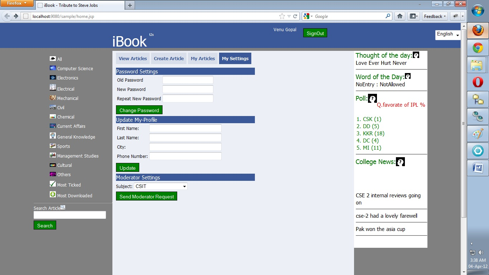

User or Member is one who already has an account.
With viewing of articles, User can also Create/Post articles,Comment Articles,Rate or Tick Article , Answer a Poll etc.
Create Article:
composing article

Edit and Delete his own Articles

Always the news , poll, thought/word of the day are visible.
A normal user can get the moderator previlages by sending Admin a request with the subject of interest.
In the settings panel , all the profile and moderator settings will be available.
